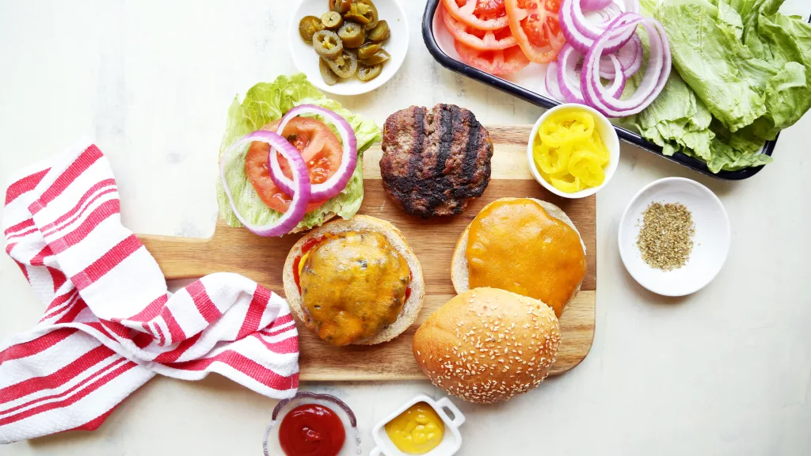
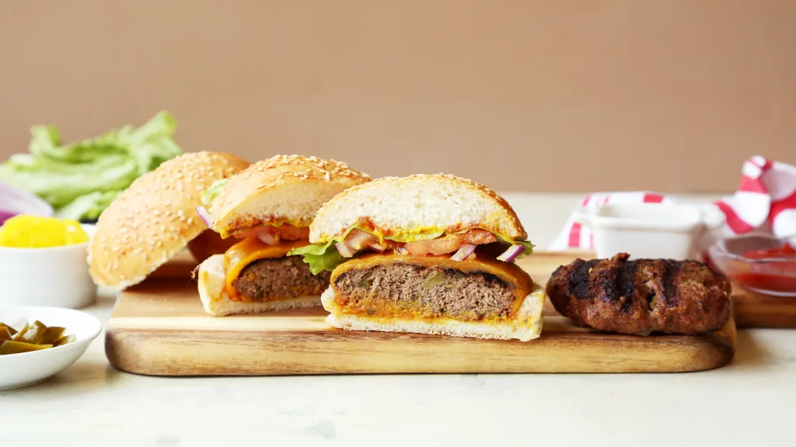
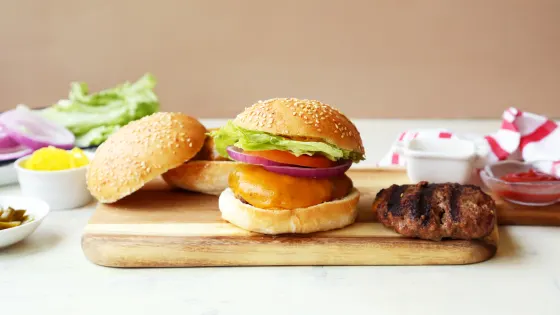

How To Make A Tasty Burger
Here are the ingredients & the instructions to make the perfect burger!
This burger is extremely healthy and delicous
Ingredients:
Raw Egg
Teaspoon of Mustard
Teaspoon of Worchestire Sauce
Small Onion, Finely Grated
Cloved Garlic, Minced
1/2 Teaspoon of Salt
1/2 Teaspoon of Pepper
1 Pound of Ground Beef
Instructions:
- Lightly oil grill & heat BBQ to medium.
- Whisk egg in a bowl & add next 6 ingredients.
- Crumble in beef & using your hands or a fork, gently mix together.
- Handle the meat as little as possible. The more you work at it the tougher it gets.
- Gently shape (don't firmly press) mixture into burgers about ¾ inch thick.
- Using your thumb, make a shallow depression in the center of each burger to prevent puffing up during cooking.
- Place burgers on the grill, close lid & BBQ until NO LONGER PINK INSIDE, turning once, about 6 to 8 minutes per side.
- An instant read thermometer should read 160F.
- Don't abuse your burgers by pressing with a spatula, pricking with a fork or turning frequently as precious juices will
be lost!
- Tuck into a warm crusty bun & add your favourite toppings.
Storage:
There is no reason to store this burger as you should be eating it insantly. However, if you want to save it for later, wrap the burger(s) and refrigerate it.
Images of Our Amazing Burger!


